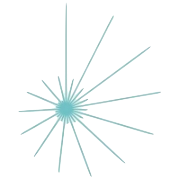

Projects
This page lists active and completed Psychological Science Accelerator (PSA) projects. Each project includes a brief description, links to project materials (e.g., preregistrations, protocols, preprints, and publications), and summary impact information when available. Projects are shown in approximate chronological order of initiation. Select a project title to view additional details, materials, and collaboration information.
-
PSA001: Face Perception

Over the past 10 years, Oosterhof and Todorov’s valence–dominance model has emerged as the most prominent account of how people evaluate faces on social dimensions. In this model, two dimensions (valence and dominance) underpin social judgements of faces. Because this model has primarily been developed and tested in Western regions, it is unclear whether these findings apply to other regions. We addressed this question by replicating Oosterhof and Todorov’s methodology across 11 world regions, 41 countries and 11,570 participants. When we used Oosterhof and Todorov’s original analysis strategy, the valence–dominance model generalized across regions. When we used an alternative methodology to allow for correlated dimensions, we observed much less generalization. Collectively, these results suggest that, while the valence–dominance model generalizes very well across regions when dimensions are forced to be orthogonal, regional differences are revealed when we use different extraction methods and correlate and rotate the dimension reduction solution.
-
PSA002: Object Orientation
Mental simulation theories of language comprehension propose that people automatically create mental representations of objects mentioned in sentences. Mental representation is often measured with the sentence-picture verification task, wherein participants first read a sentence that implies the object property (i.e., shape and orientation). Participants then respond to an image of an object by indicating whether it was an object from the sentence or not. Previous studies have shown matching advantages for shape, but findings concerning object orientation have not been robust across languages. This registered report investigated the match advantage of object orientation across 18 languages in nearly 4,000 participants. The preregistered analysis revealed no compelling evidence for a match advantage for orientation across languages. Additionally, the match advantage was not predicted by mental rotation scores. In light of these findings, we discuss the implications for current theory and methodology surrounding mental simulation.
-
PSA003: Gendered Prejudice
Previous research has studied the extent to which men are the default members of social groups in terms of memory, categorization, and stereotyping, but not attitudes which is critical because of attitudes’ relationship to behavior. Results from our survey (N > 5000) collected via a globally distributed laboratory network in over 40 regions demonstrated that attitudes toward Black people and politicians had a stronger relationship with attitudes toward the men rather than the women of the group. However, attitudes toward White people had a stronger relationship with attitudes toward White women than White men, whereas attitudes toward East Asian people, police officers, and criminals did not have a stronger relationship with attitudes toward either the men or women of each respective group. Regional agreement with traditional gender roles was explored as a potential moderator. These findings have implications for understanding the unique forms of prejudice women face around the world.
-
PSA004: True Belief
According to the justified true belief (JTB) account of knowledge, people can truly know something only if they have a belief that is both justified and true (i.e., knowledge is JTB). This account was challenged by Gettier, who argued that JTB does not explain knowledge attributions in certain situations, later called “Gettier-type cases,” wherein protagonists are justified in believing something to be true, but their belief was correct only because of luck. Laypeople may not attribute knowledge to protagonists with justified but only luckily true beliefs. Although some research has found evidence for these so-called Gettier intuitions, Turri et al. found no evidence that participants attributed knowledge in a counterfeit-object Gettier-type case differently than in a matched case of JTB. In a large-scale, cross-cultural conceptual replication of Turri and colleagues’ Experiment 1 (N = 4,724) using a within-participants design and three vignettes across 19 geopolitical regions, we did find evidence for Gettier intuitions; participants were 1.86 times more likely to attribute knowledge to protagonists in standard cases of JTB than to protagonists in Gettier-type cases. These results suggest that Gettier intuitions may be detectable across different scenarios and cultural contexts. However, the size of the Gettier intuition effect did vary by vignette, and the Turri et al. vignette produced the smallest effect, which was similar in size to that observed in the original study. Differences across vignettes suggest that epistemic intuitions may also depend on contextual factors unrelated to the criteria of knowledge, such as the characteristics of the protagonist being evaluated.
-
PSA005: Stereotype Threat

According to stereotype threat theory, the possibility of confirming a negative group stereotype evokes feelings of threat, leading people to underperform in domains where they are stereotyped as lacking ability. This theory has immense theoretical and practical implications. However, many studies supporting it include small samples and varying operational definitions of “stereotype threat”. We address the first challenge by leveraging a network of psychology labs to recruit a large Black student sample (*N~anticipated~* = 2700) from multiple US sites (*N~anticipated~* = 27). We address the second challenge by identifying three threat-increasing and three threat-decreasing procedures that could plausibly affect performance and use an adaptive Bayesian design to determine which operationalization yields the strongest evidence for underperformance. This project should advance our knowledge of a scientifically and socially important topic: the conditions under which stereotype threat affects performance among current Black students in the United States.
-
PSA006: Trolley Problem
The study of moral judgements often centres on moral dilemmas in which options consistent with deontological perspectives (that is, emphasizing rules, individual rights and duties) are in conflict with options consistent with utilitarian judgements (that is, following the greater good based on consequences). Greene et al. (2009) showed that psychological and situational factors (for example, the intent of the agent or the presence of physical contact between the agent and the victim) can play an important role in moral dilemma judgements (for example, the trolley problem). Our knowledge is limited concerning both the universality of these effects outside the United States and the impact of culture on the situational and psychological factors affecting moral judgements. Thus, we empirically tested the universality of the effects of intent and personal force on moral dilemma judgements by replicating the experiments of Greene et al. in 45 countries from all inhabited continents. We found that personal force and its interaction with intention exert influence on moral judgements in the US and Western cultural clusters, replicating and expanding the original findings. Moreover, the personal force effect was present in all cultural clusters, suggesting it is culturally universal. The evidence for the cultural universality of the interaction effect was inconclusive in the Eastern and Southern cultural clusters (depending on exclusion criteria). We found no strong association between collectivism/individualism and moral dilemma judgements.
-
PSA007: SPAM-L
Semantic priming has been studied for nearly 50 years across various experimental manipulations and theoretical frameworks. Although previous studies provide insight into the cognitive underpinnings of semantic representations, they have suffered from small sample sizes and a lack of linguistic and cultural diversity. In this Registered Report, we measured the size and the variability of the semantic priming effect across 19 languages (n = 25,163 participants analysed) by creating the largest available database of semantic priming values using an adaptive sampling procedure. We found evidence for semantic priming in terms of differences in response latencies between related word-pair conditions and unrelated word-pair conditions. Model comparisons showed that the inclusion of a random intercept for language improved model fit, providing support for variability in semantic priming across languages. This study highlights the robustness and variability of semantic priming across languages and provides a rich, linguistically diverse dataset for further analysis.
-
PSA008: Minimal Groups
Biases in favor of culturally prevalent social ingroups are ubiquitous, but random assignment to arbitrary experimentally created social groups is also sufficient to create ingroup biases (i.e., the minimal group effect; MGE). The extent to which ingroup bias arises from specific social contexts versus more general psychological tendencies remains unclear. This registered report focuses on three questions. First, how culturally prevalent is the MGE? Second, how do critical cultural and individual factors moderate its strength? Third, does the MGE meaningfully relate to culturally salient real-world ingroup biases? We compare the MGE to bias in favor of a family member (first cousin) and a national ingroup member. We propose to recruit a sample of more than 200 participants in each of more than 50 nations to examine these questions and advance our understanding of the psychological foundations and cultural prevalence of ingroup bias.
-
PSA009: Gendered Leader
Women are greatly underrepresented in positions of political leadership around the world. In seeking to explain this underrepresentation, some researchers have pointed to people’s tendencies to stereotype leaders as more similar to men than women as these tendencies can support the belief that women are unsuited to leadership. This project aims to test whether a subtle linguistic intervention is able to ameliorate this gender bias in political leadership stereotypes across different languages and national contexts (minimum anticipated N country = 15, N sample = 3,600). Specifically, this project will examine whether gender fair language (e.g., the use of paired pronouns ‘he or she’) can reduce the tendency for people to stereotype political leaders as more similar to men than women. To increase the rigor with which these stereotypes are measured, this project will complement the dominant ‘cheap talk’ measure of stereotype content with a novel incentivised measure of this content. This project will support an understanding of the capacity for gender fair language interventions to shift gender bias in the political leadership domain in different regions of the world.
-
PSA-CR 001: Loss Gain
The COVID-19 pandemic (and its aftermath) highlights a critical need to communicate health information effectively to the global public. Given that subtle differences in information framing can have meaningful effects on behavior, behavioral science research highlights a pressing question: Is it more effective to frame COVID-19 health messages in terms of potential losses (e.g., “If you do not practice these steps, you can endanger yourself and others”) or potential gains (e.g., “If you practice these steps, you can protect yourself and others”)? Collecting data in 48 languages from 15,929 participants in 84 countries, we experimentally tested the effects of message framing on COVID-19-related judgments, intentions, and feelings. Loss- (vs. gain-) framed messages increased self-reported anxiety among participants cross-nationally with little-to-no impact on policy attitudes, behavioral intentions, or information seeking relevant to pandemic risks. These results were consistent across 84 countries, three variations of the message framing wording, and 560 data processing and analytic choices. Thus, results provide an empirical answer to a global communication question and highlight the emotional toll of loss-framed messages. Critically, this work demonstrates the importance of considering unintended affective consequences when evaluating nudge-style interventions.
-
PSA-CR 002: Cognitive Reappraisal
The COVID-19 pandemic has increased negative emotions and decreased positive emotions globally. Left unchecked, these emotional changes might have a wide array of adverse impacts. To reduce negative emotions and increase positive emotions, we tested the effectiveness of reappraisal, an emotion regulation strategy which modifies how one thinks about a situation. Participants from 87 countries/regions (n = 21,644) were randomly assigned to one of two brief reappraisal interventions (reconstrual or repurposing) or one of two control conditions (active or passive). Results revealed that both reappraisal interventions (vs. both control conditions) consistently reduced negative emotions and increased positive emotions across different measures. Reconstrual and repurposing had similar effects. Importantly, planned exploratory analyses indicated that reappraisal interventions did not reduce intentions to practice preventive health behaviours. The findings demonstrate the viability of creating scalable, low-cost interventions for use around the world to build resilience during the pandemic and beyond.
-
PSA-CR 003: Self Determination
Finding communication strategies that effectively motivate social distancing continues to be a global public health priority during the COVID-19 pandemic. This cross-country, preregistered experiment (n = 25,718 from 89 countries) tested hypotheses concerning generalizable positive and negative outcomes of social distancing messages that promoted personal agency and reflective choices (i.e., an autonomy-supportive message) or were restrictive and shaming (i.e., a controlling message) compared with no message at all. Results partially supported experimental hypotheses in that the controlling message increased controlled motivation (a poorly internalized form of motivation relying on shame, guilt, and fear of social consequences) relative to no message. On the other hand, the autonomy-supportive message lowered feelings of defiance compared with the controlling message, but the controlling message did not differ from receiving no message at all. Unexpectedly, messages did not influence autonomous motivation (a highly internalized form of motivation relying on one’s core values) or behavioral intentions. Results supported hypothesized associations between people’s existing autonomous and controlled motivations and self-reported behavioral intentions to engage in social distancing. Controlled motivation was associated with more defiance and less long-term behavioral intention to engage in social distancing, whereas autonomous motivation was associated with less defiance and more short- and long-term intentions to social distance. Overall, this work highlights the potential harm of using shaming and pressuring language in public health communication, with implications for the current and future global health challenges.
-
PSA-JTF1: Moral Experiences
 Do people in different societies experience morality differently in everyday life? Using experience sampling methods, we investigate everyday moral experiences in a sample from 20 countries across 6 continents, thereby replicating and extending a large-scale study originally conducted in the United States and Canada. We aim to replicate key findings about the kinds of moral experiences people have, the relationship between such experiences and religious or political affiliation, how such experiences affect momentary feelings, and how such experiences influence moral behavior. An international sample enables us to assess the generalizability of these findings across different socio-cultural contexts.
-
PSA-JTF2: Dignity Honor Face
Cultural logic is a set of cultural scripts and patterns organized around a central theme. The cultural logics of dignity, honor, and face describe different ways of evaluating a person’s worth and maintaining cooperation. These cultural logics vary in prevalence across cultures. In this study, we collaboratively develop and validate a measure capturing these cultural logics, which will allow us to map world cultures based on the prevalence of these logics. We will further explore the interrelations of dignity, honor, and face with prosocial behavior, values, moral beliefs, and religiosity as well as examine the generalizability of these relationships across cultures. Finally, we will explore historical antecedents (e.g., resource scarcity) and current correlates (e.g., inequality) of the country-level prevalence of these cultural logics. This study will generate a new dataset of country scores for dignity, honor, and face that will be available for future comparative research. It will also provide theoretical insights for researchers and practitioners interested in cooperation and social behavior within and between cultures.
-
PSA-JTF3: Error Correction
Intuition often guides our thinking effectively, but it can also lead to consequential reasoning errors, underpinning poor decisions and biased judgments. Little is known about how people globally self-correct such intuitive reasoning errors and what enhances their correction. Defying prevailing models of reasoning, recent research suggests that people spontaneously correct only a few errors during deliberation; however, enhancing error monitoring and motivating further effort should increase error correction. Here, we study whether these mechanisms apply to reasoning across individualistic and collectivistic cultures (expected N = 33,000 participants from 67 regions). Participants will solve problems that elicit incorrect intuitions twice: first intuitively and then reflectively, allowing them to correct initial errors, in a 2 (feedback: absent vs present) × 2 (answer justification: absent vs present) between-participants design. The study will shed more light on the nature, generalisability, and promotion of corrective behaviour, crucial for understanding and improving reasoning worldwide.